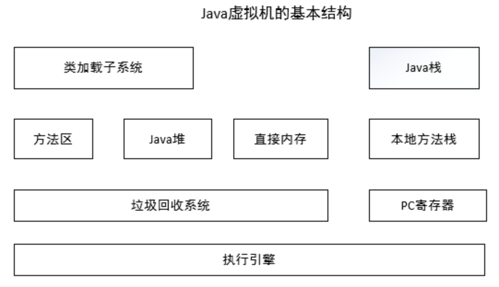
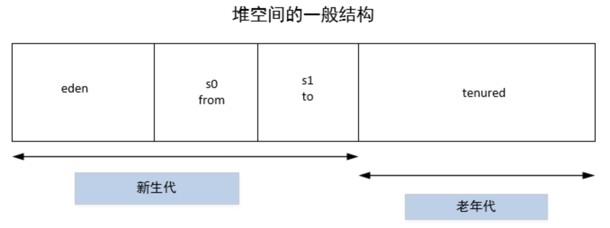

1、java虚拟机结构图

- 类加载子系统负责从文件系统或者网络中加载Class信息，加载的类信息存放于一块称为方法区的内存空间。除了类的信息外，方法区中可能还会存放运行时常量池信息，包括字符串字面量和数字常量（这部分常量信息是Class文件中常量池部分的内存映射）。
- java堆在虚拟机启动的时候建立，它是java程序最主要的内存工作区域。几乎所有的java对象实例都存放在java堆中。堆空间是所有线程共享的，这是一块与java应用密切相关的内存空间。
- java的NIO库允许java程序使用直接内存。直接内存是在java堆外的、直接向系统申请的内存空间。通常访问直接内存的速度会优于java堆。因此出于性能的考虑，读写频繁的场合可能会考虑使用直接内存。由于直接内存在java堆外，因此它的大小不会直接受限于Xmx指定的最大堆大小，但是系统内存是有限的，java堆和直接内存的总和依然受限于操作系统能给出的最大内存。
- 垃圾回收系统是java虚拟机的重要组成部分，垃圾回收器可以对方法区、java堆和直接内存进行回收。其中，java堆是垃圾收集器的工作重点。和C/C++不同，java中所有的对象空间释放都是隐式的，也就是说，java中没有类似free()或者delete()这样的函数释放指定的内存区域。对于不再使用的垃圾对象，垃圾回收系统会在后台默默工作，默默查找、标识并释放垃圾对象，完成包括java堆、方法区和直接内存中的全自动化管理。
- 每一个java虚拟机线程都有一个私有的java栈，一个线程的java栈在线程创建的时候被创建，java栈中保存着帧信息，java栈中保存着局部变量、方法参数，同时和java方法的调用、返回密切相关。
- 本地方法栈和java栈非常类似，最大的不同在于java栈用于方法的调用，而本地方法栈则用于本地方法的调用，作为对java虚拟机的重要扩展，java虚拟机允许java直接调用本地方法（通常使用C编写）。
- PC（Program Counter）寄存器也是每一个线程私有的空间，java虚拟机会为每一个java线程创建PC寄存器。在任意时刻，一个java线程总是在执行一个方法，这个正在被执行的方法称为当前方法。如果当前方法不是本地方法，PC寄存器就会指向当前正在被执行的指令。如果当前方法是本地方法，那么PC寄存器的值就是undefined。
- 执行引擎是java虚拟机的最核心组件之一，它负责执行虚拟机的字节码，现代虚拟机为了提高执行效率，会使用即时编译技术将方法编译成机器码后再执行。
2、java虚拟机内存模型
1堆2栈1区1计数器1、java堆
- java堆可以说是java运行时内存中最为重要的部分，几乎所有的对象和数组都是在堆中分配空间的。java堆分为新生代和老年代两个部分。
- 并且java堆是完全自动化管理的，通过垃圾回收机制，垃圾对象会被自动清理，而不需要显示的释放。

1.1、新生代分区原因
若只有一个eden，那么每进行一次MinorGC，存活的对象就会被送入老年代，老年代很快被填满，就会触发MajorGC，因为MajorGC之前会先进行一次MinorGC，所以也可以看做是发生了Full GC，Full GC消耗的时间要远远大于Minor GC，这样会增加系统停顿时间。也许会想，可以考虑增加老年代的空间，减少Full GC的频率，可以是频率虽然降低了，但是
由于老年代存储的对象太多，一旦发生Full GC，单次GC的时间增加了，系统停顿时间依然很长。反之，单次GC时间减少，但是GC频率增加了，结果还是一样的。
所以，我们减少Full GC的方案只有一个：减少往老年代发送的对象，进而更慢地触发Full GC。所以，我们才需要Survivor区来进行筛选，只要经历了15次Minor GC还能在年轻代存活的对象才有资格送往老年代。若只有一个eden和一个survivor，一旦Eden满了，触发一次Minor GC，Eden中的存活对象就会移动到Survivor区，同时Eden区被清空。但是当Eden又满之后，就又触发一个Minor GC，此时，Eden和Survivor中各有一些存活的对象，尤其是Survivor区发生了GC后，剩余存活的对象肯定不是紧密排列的，如果此时把Eden区中存活对象强行移动到Survivor区中，
由于这Survivor区域的对象不是连续的，所以会产生内存碎片。
1.2、新生代MinorGC流程：
- 把new的对象放在Eden区中，一旦Eden满了，触发一次Minor GC，Eden区中存活的对象会送到S0中，Eden被清空；
- 再次new对象放入Eden区中，Eden又满了，触发Minor GC，
Eden和S0中存活的对象放入到S1中，然后S0和Eden清空，然后S0和S1交换角色，S1变成了S0，作为下一次GC的主要目标，S0变成了S1，存放下一次GC存活的对象； - 如此循环往复，对象头的分代年龄达到
15岁，则会被送到老年代中。
有两个Survivor的好处就是：永远有一个S区是空的，另外一个S区无碎片。如果Survivor细分为更多块，每一块的空间会比较小，很容易导致Survivor满，对象的分代年龄增加的越快，导致送往老年代的对象越多，所以两个S区是经过权衡后的最佳方案。
1.3、对象由新生代进入老年代的时机
- 根据对象年龄
- VM会给对象增加一个年龄（age）的计数器，对象每“熬过”一次GC，年龄就要+1，待对象到达设置的阈值（默认为15岁）就会被移移动到老年代，可通过
-XX:MaxTenuringThreshold调整这个阈值。
- VM会给对象增加一个年龄（age）的计数器，对象每“熬过”一次GC，年龄就要+1，待对象到达设置的阈值（默认为15岁）就会被移移动到老年代，可通过
- 动态年龄判断
- 根据对象年龄有另外一个策略也会让对象进入老年代，不用等待15次GC之后进入老年代，他的大致规则就是，假如当前放对象的Survivor，一批对象的总大小大于这块Survivor内存的50%，那么大于这批对象年龄的对象，就可以直接进入老年代了。
- 计算逻辑：年龄1 + 年龄2 + 年龄n的多个对象总和超过
Survivor区的50%，那就会把年龄n以上的对象都放入老年代。
- 大对象直接进入老年代
- 如果设置了
-XX:PretenureSizeThreshold这个参数，那么如果你要创建的对象大于这个参数的值，比如分配一个超大的字节数组，此时就直接把这个大对象放入到老年代，不会经过新生代。 - 这么做就可以避免大对象在新生代，屡次躲过GC，还得把他们来复制来复制去的，最后才进入老年代，这么大的对象来回复制，是很耗费时间的。
- 如果设置了
2、java虚拟机栈
- Java虚拟机栈是线程私有的内存空间，它的生命周期与线程相同（随线程而生，随线程而灭），它保存方法的局部变量、部分结果、并参与方法的调用和返回；
- java虚拟机规范中，定义2中异常与栈空间有关：StackOverflowError、OutOfMemoryError
- 如果线程请求的栈深度大于虚拟机所允许的深度，将抛出StackOverflowError异常；
- 如果虚拟机栈可以动态扩展，如果扩展时无法申请到足够的内存，就会抛出OutOfMemoryError异常；
2.1、栈帧(Stack Frame)
方法压栈，先进后出- 栈帧（Stack Frame）是用于支持虚拟机进行方法调用和方法执行的数据结构。它是虚拟机运行时数据区中的java虚拟机栈的栈元素。
- 栈帧存储了方法的
局部变量表、操作数栈、动态连接和方法返回地址等信息。 - 每一个方法从调用开始至执行完成的过程，都对应着一个栈帧在虚拟机里面从入栈到出栈的过程。
- 在活动线程中，只有位于栈顶的栈帧才是有效的，称为
当前栈帧，与这个栈帧相关联的方法称为当前方法。
2.2、局部变量表
- 局部变量表（Local Variable Table）是一组
变量值存储空间，用于存放方法参数和方法内部定义的局部变量。
2.3、变量槽（Variable Slot）
- 局部变量表的容量以变量槽为最小单位，每个变量槽都可以存储32位长度的内存空间，例如boolean、byte、char、short、int、float、reference。
2.4、动态连接
2.5、方法出口
3、本地方法栈
- 本地方法栈和java虚拟机栈的功能很相似，java虚拟机栈用于管理java函数的调用，而本地方法栈用于管理本地方法的调用。
- 本地方法是C实现的。
- 会抛出StackOverflowError、OutOfMemoryError异常。
4、方法区
- 其是jvm内存区中非常重要的一块区域，与堆空间类似，它是被jvm中所有线程共享的。
- 主要保存的信息是类的元数据（也可称为永久区，主要存放常量和类的定义信息）。
- 最为重要的是类的类型信息、常量池、域信息、方法信息。其保存的信息大部分来自class文件，是java应用程序运行必不可少的重要数据。
5、程序计数器
程序计数器（Program Counter Register）是一块较小的内存空间，它可以看做是当前线程所执行的字节码的行号指示器。在虚拟机的概念模型里（仅是概念模型，各种虚拟机可能会通过一些更高效的方式去实现），字节码解释器工作时就是通过改变这个计数器的值来选取下一条需要执行的字节码指令，分支、循环、跳转、异常处理、线程恢复等基础功能都需要依赖这个计数器来完成。
—— 摘自《深入理解JAVA虚拟机》
- 线程私有
- JVM规范中唯一没有规定OutOfMemoryError情况的区域
- 如果正在执行的是Native 方法，则这个计数器值为空
3、JVM内存分配参数
| 1.设置最大堆内存 | -Xmx 11M | 指新生代和老年代的大小之和最大值 |
|---|---|---|
| 2.设置最小堆内存 | -Xms 4M | 指新生代和老年代的大小之和最小值 |
| 3.设置新生代 | -Xmn 2M | 设置一个较大的新生代会减小老年代的大小。 新生代大小一般设置为整个堆空间的1/4～1/3左右。 |
| 4.设置持久代最大值 | -XX:MaxPermSize = 4M | 设置持久代最大值 |
| 5.设置持久代初始大小 | -XX:PermSize = 4M | 设置持久代初始大小 |
| 6.设置线程栈 | -Xss 1M | 设置的每个线程拥有1M的栈空间。 注意，系统所支持的线程数，还与堆的大小有关，若操作系统内存减去堆内存后，剩余的系统内存不足而无法创建新的线程，则会抛出OOM，故设置一个较小的堆和较小的栈有助于提高系统所能承受的最大线程数。 |
| 7.设置eden/s0比例 | -XX:SurvivorRatio = 8 | 此时eden=[size/(1+1+8)]*8 |
| 8.设置survivior区的可使用率 | -XX:TargetSurvivorRatio | 当survivior区的空间使用率达到设置值，会将对象送入老年代 |
| 9.设置新生代大小 | -XX:NewSize | |
| 10.设置新生代/老年代比例 | -XX:NewRatio = 2 | |
| 11.设置堆空间最小空闲比例 | -XX:MinHeapFreeRatio | -XX:MinHeapFreeRatio |
| 12.设置堆空间最大空闲比例 | -XX:MaxHeapFreeRatio | -XX:MaxHeapFreeRatio |
| 13.打印堆信息 | -XX:+PrintGCDetails | -XX:+PrintGCDetails |
4、垃圾回收算法
4.1、引用计数法（Reference Counting）
4.2、标记-清除算法（Mark-Sweep）
4.3、复制算法（Copying）
4.4、标记-压缩算法（Mark-Compact）
4.5、增量算法（Incremental Collecting）
4.6、分代（Generational Collecting）
5、JVM调优
5.1、将新对象预留在新生代
- 在JVM参数调优中，可以为应用程序分配一个合理的新生代空间，以最大限度避免新对象直接进入老年代的情况。
5.2、大对象进入老年代
- 使用参数-XX:PretenureSizeThreshold 设置大对象进入老年代的阀值。
5.3、设置对象进入老年代的年龄
5.4、稳定堆大小
- 获得一个稳定的堆大小是使-Xms和-Xmx的大小一致，即最大堆和最小堆一样，只有这样系统在运行时，堆大小是恒定的，稳定的堆空间可以减少GC次数。
6、Java性能调优
6.1、Linux指令
- top
- sar
6.2、JDK命令行
- jps
- 列出java进程
- jstat
- 查看java应用程序运行时信息，可查看堆信息的详细情况
- jinfo
- jmap
- 生成java应用程序的堆快照和对象统计信息
- jstack
- 导出java应用程序线程堆栈